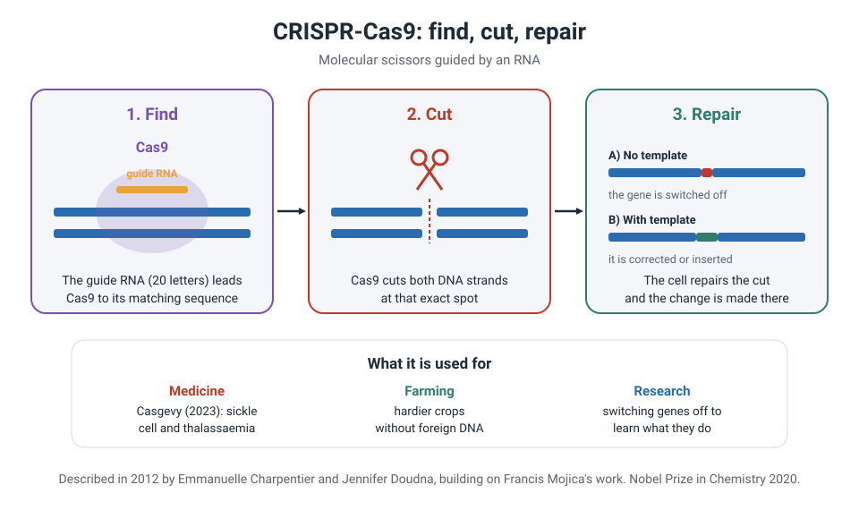

General information only. It does not replace advice from a health professional or genetic counselling.

A bacterial immune system
CRISPR stands for "clustered regularly interspaced short palindromic repeats". The name describes something first seen in the DNA of bacteria and archaea: repeated sequences separated by variable pieces.
Spanish microbiologist Francisco Mojica, of the University of Alicante, was among the first to study them in the 1990s and, in 2005, proposed their function: the variable pieces are remnants of viruses that had attacked the bacterium. They work as a memory. If the same virus returns, the bacterium recognises it and cuts it with an enzyme, the best known of which is Cas9. Read his profile.
From bacteria to the laboratory
In 2012, Emmanuelle Charpentier and Jennifer Doudna showed that the system could be reprogrammed: changing a small RNA molecule, the guide, is enough to make Cas9 cut DNA at exactly the desired place. The following year several groups, including Feng Zhang's, applied it in human cells. Charpentier and Doudna received the 2020 Nobel Prize in Chemistry.
How it works, in three steps
- Search. The guide RNA, about 20 letters long, takes Cas9 to the complementary DNA sequence.
- Cut. Cas9 cuts both DNA strands at that point.
- Repair. The cell repairs the cut. In doing so it often introduces small errors that inactivate the gene; or, if given a template, it can correct it or insert a new sequence.

Beyond scissors: base and prime editors
Cutting both strands of DNA is effective but somewhat crude. Finer tools have therefore been developed:
- Base editors (David Liu and colleagues, 2016–2017): a "disabled" Cas9 that does not fully cut, joined to an enzyme that changes one letter into another (for example a C into a T, or an A into a G). Many diseases are due to a single-letter change.
- Prime editors (2019): use a guide RNA that also carries the "template" for the desired change. They can make substitutions, small insertions and deletions with fewer cuts.
- Epigenetic editing: instead of changing letters, it switches genes on or off by modifying the chemical marks that regulate them.
The first CRISPR medicine
In November 2023, the United Kingdom authorised exagamglogene autotemcel (Casgevy), followed shortly by the United States and the European Union. It is indicated for severe sickle cell disease and transfusion-dependent beta-thalassaemia.
It does not directly correct the faulty gene. Blood stem cells are collected from the patient, edited in the laboratory to reactivate fetal haemoglobin, which the body stops making after birth, and returned to the patient after chemotherapy. In trials, the vast majority of patients stopped having severe pain crises or needing transfusions.
Its limits: it is expensive (over a million euros per patient), requires intensive chemotherapy and is only offered in specialist centres.
Editing inside the body
In 2021 the first trial was published in which CRISPR was injected directly into the bloodstream (inside lipid nanoparticles that reach the liver) to switch off the transthyretin gene in hereditary amyloidosis. A single dose reduced the toxic protein by more than 80 %. The same approach is now being studied for hereditary angioedema and for lowering cholesterol with a single injection. In 2025, phase 3 trials of one of these treatments were halted after a case of severe liver toxicity, a reminder that long-term safety is still being studied.
Baby KJ: editing made to measure
In 2025 the case of KJ was published, a baby from Philadelphia with severe CPS1 deficiency, a metabolic disease that causes ammonia to build up. In just six months, a team designed, manufactured and administered a personalised base editor to correct his variant. He received several doses without serious adverse effects and was able to tolerate more protein in his diet. It is the first gene-editing treatment created for a single person, and it opens the door to bespoke therapies for ultra-rare diseases.
Other uses
- Research: makes it possible to study the function of any gene quickly.
- Agriculture: plants more resistant to disease or drought.
- Diagnostics: rapid tests to detect viruses.
- Clinical trials in liver, eye and cholesterol disorders and some cancers.
Risks and questions
- Off-target cuts: Cas9 can cut at sites similar to the intended one.
- Long-term effects still unknown.
- Embryo editing: changes that would be passed on to descendants. We discuss it in Ethics of gene editing.
CRISPR in Spain
Microbiologist Francisco Mojica, from Alicante, described the repeated sequences in bacteria in the 1990s and 2000s and proposed that they were a defence system (read his profile). Today several Spanish groups, such as those at CNB-CSIC, CNIO and CIEMAT, use CRISPR to study rare diseases and cancer, and to develop therapies for blood and skin conditions.
Sources
- Mojica FJM, et al. Intervening sequences of regularly spaced prokaryotic repeats derive from foreign genetic elements. J Mol Evol. 2005;60:174-182.
- Jinek M, et al. A programmable dual-RNA-guided DNA endonuclease in adaptive bacterial immunity. Science. 2012;337:816-821.
- The Nobel Prize in Chemistry 2020. nobelprize.org.
- Frangoul H, et al. Exagamglogene autotemcel for severe sickle cell disease. N Engl J Med. 2024;390:1649-1662.
- European Medicines Agency. Casgevy: EPAR. 2024.
- Komor AC, Kim YB, Packer MS, Zuris JA, Liu DR. Programmable editing of a target base in genomic DNA without double-stranded DNA cleavage. Nature. 2016;533(7603):420-424. doi:10.1038/nature17946
- Anzalone AV, Randolph PB, Davis JR, et al. Search-and-replace genome editing without double-strand breaks or donor DNA. Nature. 2019;576(7785):149-157. doi:10.1038/s41586-019-1711-4
- Gillmore JD, Gane E, Taubel J, et al. CRISPR-Cas9 in vivo gene editing for transthyretin amyloidosis. N Engl J Med. 2021;385(6):493-502. doi:10.1056/NEJMoa2107454
- Musunuru K, Grandinette SA, Wang X, et al. Patient-specific in vivo gene editing to treat a rare genetic disease. N Engl J Med. 2025;392(22):2235-2243. doi:10.1056/NEJMoa2504747